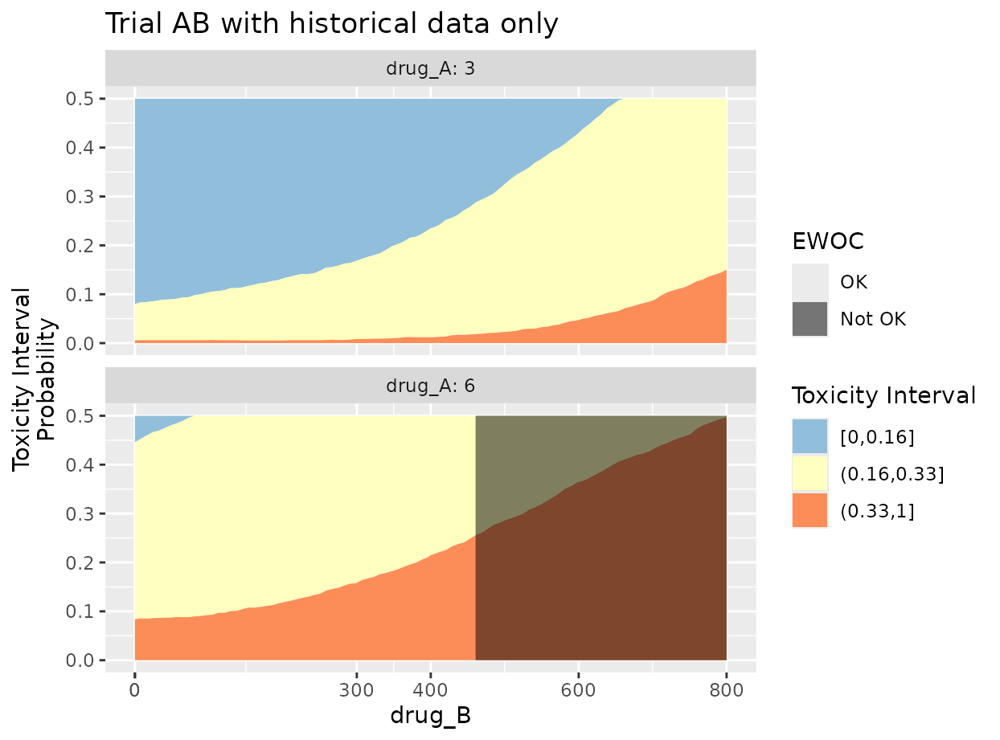
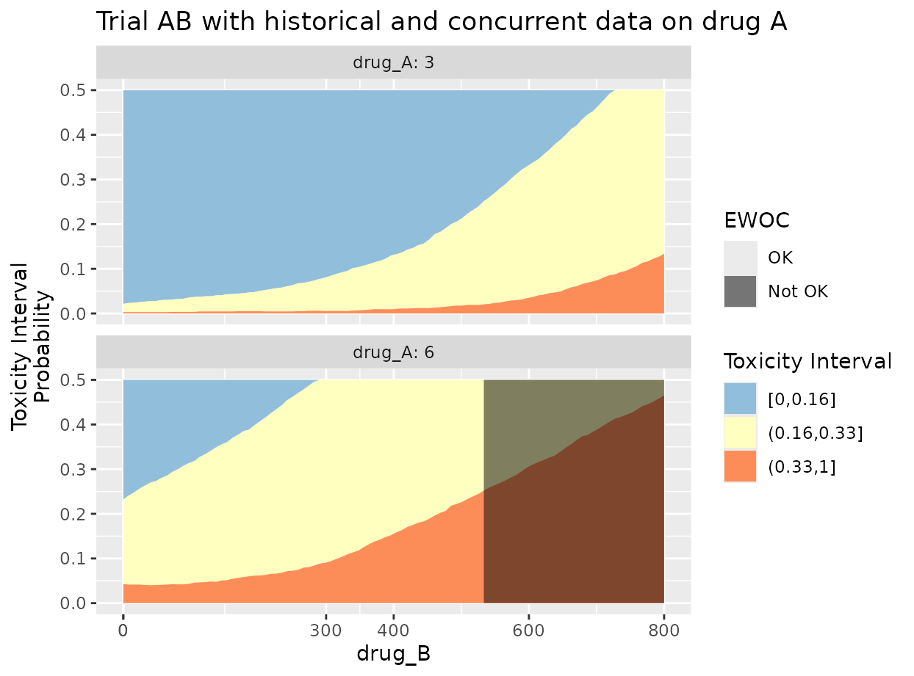
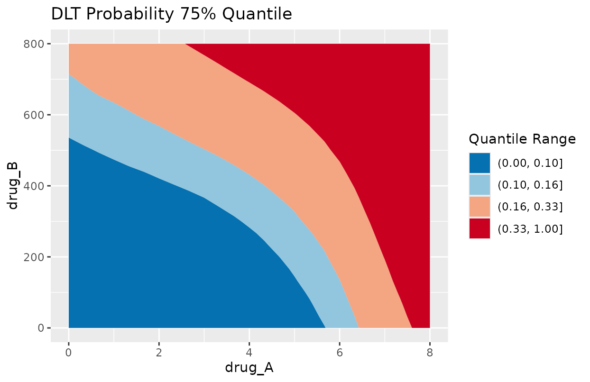

Guiding Oncology Dose-Escalation Trials
Andrew Bean, Sebastian Weber, Lukas Widmer
2025-10-17
Source:vignettes/introduction.Rmd
introduction.RmdIntroduction
The OncoBayes2 package provides flexible functions for
Bayesian meta-analytic modeling of the incidence of Dose Limiting
Toxicities (DLTs) by dose level, under treatment regimes involving any
number of combination partners. Such models may be used to ensure
patient safety during trial conduct by supporting dose-escalation
decisions. In addition, the model can support estimation of the Maximum
Tolerated Dose (MTD) in adaptive Bayesian dose-escalation designs.
Whereas traditional dose escalation designs, such as the 3+3 design, base the dosing decisions on predefined rules about the number of DLTs in the last one or two cohorts at the current dose, model-based designs such as those using Bayesian Logistic Regression Models (BLRMs) endeavor to model the dose-toxicity relationship as a continuous curve, and allow the model to guide dosing decisions. In this way, all available data contributes to the dosing decisions. Furthermore, extensions to the BLRM approach can support inclusion of available additional data on the compound(s) involved. The additional data can be either historical data collected prior trial conduct or concurrent data, which is collected during trial conduct in the context of another trial/context.
The package supports incorporation of additional data through a Meta-Analytic-Combined (MAC) framework [1]. Within the MAC model the heterogeneous sources of data are assigned to groups and information is shared across groups through a hierarchical model structure. For any given group this leads to borrowing strength from all other groups while discounting the information from other groups. The amount of discounting (or down-weighting) is determined by the heterogeneity. A group is commonly defined to be a trial, but that must not necessarily hold.
The key assumption of the hierarchical model is the exchangability assumption between the groups. There are two independent mechanisms in the package which aim at relaxing the exchangability assumption:
Differential discounting: Groups are assigned to different strata. While the overall hierarchical mean stays the same, the heterogeneity between groups is allowed to be different between strata. Each group must be assigned to a single stratum only.
EXchangeable/Non-EXchangeable (EX/NEX) model for each group: With EXNEX each group is modelled as being exchangeable with some probability and is allowed to have it’s own group-specific estimate as if the group is not exchangeable with the remainder of the data.
Both techniques are rather advanced and are not discussed further in this introduction.
In the following we illustrate first a very common use case of historical information only and then consider concurrent data in addition. In particular, we will discuss a trial evaluating a combination of two drugs whenever historical information is available on each drug individually from separate trials. This example will be expanded by using in addition concurrent data on one of the drugs and on their combination.
Note on terminology: While in the literature (see
[1], [2], and [4]) the term stratum refers to a trial commonly,
OncoBayes2 deviates here and uses the term group
instead. This is more in line with hierarchical modeling terminology.
The term stratum is used to define a higher level grouping
structure. That is, every group is assigned to a single stratum
within OncoBayes2. This higher level grouping (groups of
groups) is necessary whenever differential discounting is used. By
convention OncoBayes2 assigns any group to the stratum
“all” whenever no stratum is assigned for a group.
Example use-case: Dual combination trial with historical information
Consider the application described in Section 3.2 of [1], in which
the risk of DLT is to be studied as a function of dose for two drugs,
drug A and drug B. Historical information on the toxicity profiles of
these two drugs is available from single agent trials
trial_A and trial_B. The historical data for
this example is available in an internal data set.
kable(hist_combo2)| group_id | drug_A | drug_B | num_patients | num_toxicities | cohort_time |
|---|---|---|---|---|---|
| trial_A | 3.0 | 0.0 | 3 | 0 | 0 |
| trial_A | 4.5 | 0.0 | 3 | 0 | 0 |
| trial_A | 6.0 | 0.0 | 6 | 0 | 0 |
| trial_A | 8.0 | 0.0 | 3 | 2 | 0 |
| trial_B | 0.0 | 33.3 | 3 | 0 | 0 |
| trial_B | 0.0 | 50.0 | 3 | 0 | 0 |
| trial_B | 0.0 | 100.0 | 4 | 0 | 0 |
| trial_B | 0.0 | 200.0 | 9 | 0 | 0 |
| trial_B | 0.0 | 400.0 | 15 | 0 | 0 |
| trial_B | 0.0 | 800.0 | 20 | 2 | 0 |
| trial_B | 0.0 | 1120.0 | 17 | 4 | 0 |
The objective is to aid dosing and dose-escalation decisions in a
future trial, trial_AB, in which the drugs will be
combined. Additionally, another investigator-initiated trial
IIT will study the same combination concurrently. Note that
these as-yet-unobserved sources of data are included in the input data
as unobserved factor levels. This mechanism allows us to specify a joint
meta-analytic prior for all four sources of historical and concurrent
data.
levels(hist_combo2$group_id)## [1] "trial_A" "trial_B" "IIT" "trial_AB"However, we will first consider only the dual combination trial AB and it’s historical data and add concurrent data at a later stage.
Setting up the trial design
The function blrm_trial provides an object-oriented
framework for operationalizing the dose-escalation trial design. This
framework is intended as a convenient wrapper for the main model-fitting
engine of the package, the blrm_exnex() function. The
latter allows additional flexibility for specifying the functional form
of the model, but blrm_trial covers the most common
use-cases. This introductory vignette highlights blrm_trial
in lieu of blrm_exnex; the reader is referred to the
help-page of the function?blrm_exnex for more details.
One begins with blrm_trial by specifying three key
design elements:
- The historical dose-toxicity data
- Information about the study drugs
- The provisional dose levels to be studied during the escalation trial
Information about the study drugs is encoded through a
tibble as below. This includes the names of the
study-drugs, the reference doses (see [3] or ?blrm_exnex to
understand the role this choice plays in the model specification), the
dosing units, and (optionally) the a priori expected DLT rate for each
study drug given individually at the respective reference doses.
All design information for the study described in [1] is also
included as built-in datasets, which are part of the
OncoBayes2 package.
Drug info
kable(drug_info_combo2)| drug_name | dose_ref | dose_unit | reference_p_dlt |
|---|---|---|---|
| drug_A | 6 | mg | 0.2 |
| drug_B | 1500 | mg | 0.2 |
Dose info
The provisional dose levels are specified as below. For conciseness, we limit the dose level of in these provisional doses.
dose_info <- filter(
dose_info_combo2, group_id == "trial_AB",
drug_A %in% c(3, 6), drug_B %in% c(0, 400, 800)
)
kable(dose_info)| group_id | drug_A | drug_B | dose_id |
|---|---|---|---|
| trial_AB | 3 | 0 | 27 |
| trial_AB | 3 | 400 | 28 |
| trial_AB | 3 | 800 | 30 |
| trial_AB | 6 | 0 | 35 |
| trial_AB | 6 | 400 | 36 |
| trial_AB | 6 | 800 | 38 |
Initializing a blrm_trial
Together with the data described in the previous section, these
objects can be used to initialize a blrm_trial object.
combo2_trial_setup <- blrm_trial(
data = hist_combo2,
drug_info = drug_info_combo2,
dose_info = dose_info
)## No stratum defined - assigning all groups to single stratum "all"## Please configure blrm_exnex using the update() function.Specifying the prior and fitting the model
At this point, the trial design has been initialized. However, in the
absence of simplified_prior = TRUE, we have not yet
specified the prior distribution for the dose-toxicity model.
OncoBayes2 provides two methods for completing the model specification:
Use
simplified_prior = TRUE, which employs a package-default prior distribution, subject to a small number of optional arguments controlling the details.Provide a full prior specification to be passed to the
blrm_exnexfunction.
For simplicity and conciseness purposes, here we use method #1, which
is not recommended for actual trials as the prior should be chosen
deliberately and there is no guarantee that the simplified prior will
remain stable across releases of the package. See
?'example-combo2_trial' for an example of #2. The below
choice of prior broadly follows the case study in [4], although we
slightly deviate from the model in [4] by a different reference dose and
mean reference DLT rate.
To employ the simplified prior, and fit the model with MCMC:
combo2_trial_start <- blrm_trial(
data = hist_combo2,
drug_info = drug_info_combo2,
dose_info = dose_info,
simplified_prior = TRUE,
EXNEX_comp = FALSE,
EX_prob_comp_hist = 1,
EX_prob_comp_new = 1
)## Warning in .blrm_trial_compute_simple_prior(object = trial, EXNEX_comp =
## EXNEX_comp, : Simplified prior CAN and WILL change with releases. NOT
## recommended to use in production. Instantiating a simplified prior - run
## summary(trial, "blrm_exnex_call") to inspect arguments.## Warning: There were 1 divergent transitions after warmup. See
## https://mc-stan.org/misc/warnings.html#divergent-transitions-after-warmup
## to find out why this is a problem and how to eliminate them.## Warning: Examine the pairs() plot to diagnose sampling problems## Warning: 1 out of 6 ewoc metrics are within the 95% MCMC error of the decision boundary.
## Be careful when using the imprecise ewoc estimates! It is recommended to run
## more iterations and review doses close to critical thresholds.
## You may call "summary(trial, summarize='ewoc_check', ...)" for more diagnostic details.
## Please call "help('blrm_trial', help_type='summary')" for further documentation.Now, the object combo2_trial_start contains the
posterior model fit at the start of the trial, in addition to the trial
design details. Next we highlight the main methods for extracting
relevant information from it.
Summary of prior specification
The function prior_summary provides a facility for
printing, in a readable format, a summary of the prior
specification.
prior_summary(combo2_trial_start) # not run hereSummary of posterior
The main target of inference is generally the probability of DLT at a selection of provisional dose levels. To obtain these summaries for the provisional doses specified previously, we simply write:
kable(summary(combo2_trial_start, "dose_prediction"), digits = 2)| group_id | drug_A | drug_B | dose_id | stratum_id | mean | sd | 2.5% | 50% | 97.5% | prob_underdose | prob_target | prob_overdose | ewoc_ok |
|---|---|---|---|---|---|---|---|---|---|---|---|---|---|
| trial_AB | 3 | 0 | 27 | all | 0.08 | 0.14 | 0.00 | 0.04 | 0.52 | 0.88 | 0.07 | 0.04 | TRUE |
| trial_AB | 3 | 400 | 28 | all | 0.14 | 0.17 | 0.01 | 0.09 | 0.72 | 0.74 | 0.17 | 0.09 | TRUE |
| trial_AB | 3 | 800 | 30 | all | 0.21 | 0.20 | 0.02 | 0.15 | 0.85 | 0.53 | 0.29 | 0.18 | TRUE |
| trial_AB | 6 | 0 | 35 | all | 0.18 | 0.17 | 0.01 | 0.14 | 0.77 | 0.58 | 0.29 | 0.13 | TRUE |
| trial_AB | 6 | 400 | 36 | all | 0.24 | 0.21 | 0.02 | 0.18 | 0.91 | 0.45 | 0.31 | 0.24 | TRUE |
| trial_AB | 6 | 800 | 38 | all | 0.32 | 0.25 | 0.02 | 0.24 | 0.94 | 0.36 | 0.26 | 0.39 | FALSE |
Such summaries may be used to assess which combination doses have
unacceptable high risk of toxicity. For example, according to the
escalation with overdose control (EWOC) design criteria [3], one would
compute the posterior probability that each dose is excessively toxic
(column prob_overdose; note that the definition of
“excessively toxic” is encoded in the blrm_trial object
through the interval_prob argument), and take as eligible
doses only those where this probability does not exceed 25% (column
ewoc_ok).
Posterior accuracy of EWOC estimation
Since the posterior is represented with a large sample of the target
density, any estimate derived from it is subject to finite sampling
error. The sampling error is determined by the posterior sample size and
the quality of the used Markov chain Monte Carlo (MCMC). Hence, it is
required to ensure that the MCMC chains have converged and that the
number of samples representing the posterior is large enough to estimate
desired quantities of interest with sufficient accuracy. The
OncoBayes2 package automatically warns in case of
non-convergence as indicated by the Rhat diagnostic [5]. All model
parameters must have an Rhat of less than
(values much larger than
indicate non-convergence).
As the primary objective for a BLRM is to determine a safe set of
doses via estimation of EWOC, the key quantities defining EWOC are
monitored for convergence and sufficient accuracy for each pre-defined
dose as well. These diagnostics can be obtained for the pre-defined set
of doses via the ewoc_check summary routine as:
kable(summary(combo2_trial_start, "ewoc_check"), digits = 3)## Warning: 1 out of 6 ewoc metrics are within the 95% MCMC error of the decision boundary.
## Be careful when using the imprecise ewoc estimates! It is recommended to run
## more iterations and review doses close to critical thresholds.
## You may call "summary(trial, summarize='ewoc_check', ...)" for more diagnostic details.
## Please call "help('blrm_trial', help_type='summary')" for further documentation.| group_id | drug_A | drug_B | dose_id | stratum_id | prob_overdose_est | prob_overdose_stat | prob_overdose_mcse | prob_overdose_ess | prob_overdose_rhat |
|---|---|---|---|---|---|---|---|---|---|
| trial_AB | 3 | 0 | 27 | all | 0.093 | -60.245 | 0.004 | 1898.087 | 1.000 |
| trial_AB | 3 | 400 | 28 | all | 0.164 | -41.309 | 0.004 | 1924.781 | 1.001 |
| trial_AB | 3 | 800 | 30 | all | 0.275 | -8.714 | 0.006 | 1650.808 | 1.000 |
| trial_AB | 6 | 0 | 35 | all | 0.230 | -17.027 | 0.006 | 2026.784 | 1.002 |
| trial_AB | 6 | 400 | 36 | all | 0.322 | -1.165 | 0.007 | 1984.089 | 1.002 |
| trial_AB | 6 | 800 | 38 | all | 0.463 | 13.750 | 0.010 | 2092.806 | 1.002 |
For the standard EWOC criterion, the prob_overdose_est
column contains the 75% quantile of the posterior DLT probability, which
must be smaller than 33%. The prob_overdose_stat column is
centered by 33% and standardized with the Monte-Carlo standard error
(mcse). Therefore, negative values correspond to safe doses and since
the quantity is approximately distributed as a standard normal random
variate, the statistic can be compared with quantiles of the standard
normal distribution. OncoBayes2 will warn for an imprecise
EWOC estimate whenever the statistic is within the range of the central
95% interval of
.
Whenever this occurs it can be useful to increase the number of
iterations in order to decrease the mcse, which scales with the inverse
of the square root of the MC ess. The MC ess is the number of
independent samples the posterior corresponds to (recall that MCMC
results in correlated samples). For more information please refer to the
help of the summary.blrm_trial function (see
help("blrm_trial", help_type="summary")).
We can see that for the pre-defined doses of the trial the EWOC decision can be determined with more than enough accuracy given that the statistic closest to is .
Posterior predictive summaries
The BLRM allows a principled approach to predicting the number of
DLTs that may be observed in a future cohort. This may be a key estimand
for understanding and limiting the toxicity risk to patients. For
example, suppose a candidate starting dose for the new trial
trial_AB is 3 mg of drug A + 400 mg of drug B. We may wish
to check that at this dose, the predictive probability of 2 or more DLTs
out of an initial cohort of 3 to 6 patients is sufficiently low.
candidate_starting_dose <- summary(combo2_trial_start, "dose_info") |>
filter(drug_A == 3, drug_B == 400) |>
crossing(num_toxicities = 0, num_patients = 3:6)
pp_summary <- summary(combo2_trial_start,
interval_prob = c(-1, 0, 1, 6), predictive = TRUE,
newdata = candidate_starting_dose
)
kable(bind_cols(
select(candidate_starting_dose, num_patients),
select(pp_summary, ends_with("]"))
), digits = 3)| num_patients | (-1,0] | (0,1] | (1,6] |
|---|---|---|---|
| 3 | 0.696 | 0.217 | 0.087 |
| 4 | 0.636 | 0.239 | 0.125 |
| 5 | 0.586 | 0.253 | 0.162 |
| 6 | 0.542 | 0.261 | 0.197 |
This tells us that for the initial cohort, according to the model, the chance of two or more patients developing DLTs ranges from 8.7% to 19.7%, depending on the number of patients enrolled.
Updating the model with new data
Dose-escalation designs are adaptive in nature, as dosing decisions are made after each sequential cohort. The model must be updated with the accrued data for each dose escalation decision point. If a new cohort of patients is observed, say:
new_cohort <- tibble(
group_id = "trial_AB",
drug_A = 3,
drug_B = 400,
num_patients = 5,
num_toxicities = 1
)One can update the model to incorporate this new information using
update() with add_data equal to the new
cohort:
combo2_trial_update <- update(combo2_trial_start, add_data = new_cohort)## Warning: 1 out of 6 ewoc metrics are within the 95% MCMC error of the decision boundary.
## Be careful when using the imprecise ewoc estimates! It is recommended to run
## more iterations and review doses close to critical thresholds.
## You may call "summary(trial, summarize='ewoc_check', ...)" for more diagnostic details.
## Please call "help('blrm_trial', help_type='summary')" for further documentation.This yields a new blrm_trial object with updated data
and posterior summaries. Obtaining the summaries for the pre-planned
provisional doses is then again straightforward:
kable(summary(combo2_trial_update, "dose_prediction"), digits = 2)| group_id | drug_A | drug_B | dose_id | stratum_id | mean | sd | 2.5% | 50% | 97.5% | prob_underdose | prob_target | prob_overdose | ewoc_ok |
|---|---|---|---|---|---|---|---|---|---|---|---|---|---|
| trial_AB | 3 | 0 | 27 | all | 0.08 | 0.08 | 0.00 | 0.06 | 0.27 | 0.89 | 0.10 | 0.01 | TRUE |
| trial_AB | 3 | 400 | 28 | all | 0.14 | 0.09 | 0.02 | 0.12 | 0.37 | 0.68 | 0.27 | 0.04 | TRUE |
| trial_AB | 3 | 800 | 30 | all | 0.23 | 0.15 | 0.04 | 0.20 | 0.58 | 0.38 | 0.40 | 0.22 | TRUE |
| trial_AB | 6 | 0 | 35 | all | 0.18 | 0.13 | 0.01 | 0.15 | 0.49 | 0.53 | 0.37 | 0.10 | TRUE |
| trial_AB | 6 | 400 | 36 | all | 0.25 | 0.16 | 0.04 | 0.22 | 0.61 | 0.34 | 0.39 | 0.27 | FALSE |
| trial_AB | 6 | 800 | 38 | all | 0.34 | 0.22 | 0.04 | 0.30 | 0.82 | 0.25 | 0.30 | 0.46 | FALSE |
In case posterior summaries are needed for doses other than the
pre-planned ones, then this is possible using the
newdata_prediction functionality, which allows to specify a
different set of doses via the newdata argument:
kable(summary(combo2_trial_update, "newdata_prediction",
newdata = tibble(
group_id = "trial_AB",
drug_A = 4.5,
drug_B = c(400, 600, 800)
)
), digits = 2)## stratum_id not given, but only one stratum defined. Assigning first stratum.| group_id | drug_A | drug_B | stratum_id | dose_id | mean | sd | 2.5% | 50% | 97.5% | prob_underdose | prob_target | prob_overdose | ewoc_ok |
|---|---|---|---|---|---|---|---|---|---|---|---|---|---|
| trial_AB | 4.5 | 400 | all | NA | 0.19 | 0.12 | 0.03 | 0.16 | 0.48 | 0.49 | 0.38 | 0.13 | TRUE |
| trial_AB | 4.5 | 600 | all | NA | 0.23 | 0.15 | 0.04 | 0.20 | 0.59 | 0.38 | 0.38 | 0.24 | TRUE |
| trial_AB | 4.5 | 800 | all | NA | 0.28 | 0.18 | 0.04 | 0.24 | 0.71 | 0.29 | 0.37 | 0.34 | FALSE |
Data scenarios
It may be of interest to test prospectively how this model responds in various scenarios for upcoming cohorts.
This can be done easily by again using update() with the
add_data argument. In the code below, we explore 3 possible
outcomes for a subsequent cohort enrolled at 3 mg drug A + 800 mg drug
B, and review the model’s inference at adjacent doses.
# set up two scenarios at the starting dose level
# store them as data frames in a named list
scenarios <- expand_grid(
group_id = "trial_AB",
drug_A = 3,
drug_B = 800,
num_patients = 3,
num_toxicities = 0:2
) |>
split(1:3) |>
setNames(paste0(0:2, "/3 DLTs"))
candidate_doses <- expand_grid(
group_id = "trial_AB",
drug_A = c(3, 4.5),
drug_B = c(600, 800)
)
scenario_inference <- lapply(scenarios, function(scenario_newdata) {
# refit the model with each scenario's additional data
scenario_fit <- update(combo2_trial_update, add_data = scenario_newdata)
# summarize posterior at candidate doses
summary(scenario_fit, "newdata_prediction", newdata = candidate_doses)
}) |>
bind_rows(.id = "Scenario")## Warning: There were 1 divergent transitions after warmup. See
## https://mc-stan.org/misc/warnings.html#divergent-transitions-after-warmup
## to find out why this is a problem and how to eliminate them.## Warning: Examine the pairs() plot to diagnose sampling problems## Warning: 1 out of 6 ewoc metrics are within the 95% MCMC error of the decision boundary.
## Be careful when using the imprecise ewoc estimates! It is recommended to run
## more iterations and review doses close to critical thresholds.
## You may call "summary(trial, summarize='ewoc_check', ...)" for more diagnostic details.
## Please call "help('blrm_trial', help_type='summary')" for further documentation.| Scenario | drug_A | drug_B | mean | sd | 2.5% | 50% | 97.5% | prob_underdose | prob_target | prob_overdose | ewoc_ok |
|---|---|---|---|---|---|---|---|---|---|---|---|
| 0/3 DLTs | 3.0 | 600 | 0.13 | 0.08 | 0.02 | 0.12 | 0.34 | 0.70 | 0.27 | 0.03 | TRUE |
| 0/3 DLTs | 3.0 | 800 | 0.17 | 0.10 | 0.03 | 0.15 | 0.42 | 0.55 | 0.37 | 0.08 | TRUE |
| 0/3 DLTs | 4.5 | 600 | 0.17 | 0.11 | 0.03 | 0.15 | 0.45 | 0.53 | 0.37 | 0.10 | TRUE |
| 0/3 DLTs | 4.5 | 800 | 0.21 | 0.14 | 0.03 | 0.18 | 0.56 | 0.44 | 0.39 | 0.17 | TRUE |
| 1/3 DLTs | 3.0 | 600 | 0.20 | 0.10 | 0.05 | 0.18 | 0.44 | 0.42 | 0.47 | 0.11 | TRUE |
| 1/3 DLTs | 3.0 | 800 | 0.25 | 0.13 | 0.06 | 0.23 | 0.55 | 0.26 | 0.50 | 0.24 | TRUE |
| 1/3 DLTs | 4.5 | 600 | 0.26 | 0.14 | 0.06 | 0.24 | 0.59 | 0.27 | 0.46 | 0.28 | FALSE |
| 1/3 DLTs | 4.5 | 800 | 0.32 | 0.17 | 0.07 | 0.29 | 0.69 | 0.19 | 0.38 | 0.43 | FALSE |
| 2/3 DLTs | 3.0 | 600 | 0.28 | 0.13 | 0.08 | 0.26 | 0.60 | 0.19 | 0.50 | 0.31 | FALSE |
| 2/3 DLTs | 3.0 | 800 | 0.36 | 0.16 | 0.11 | 0.34 | 0.73 | 0.08 | 0.40 | 0.52 | FALSE |
| 2/3 DLTs | 4.5 | 600 | 0.36 | 0.16 | 0.10 | 0.34 | 0.72 | 0.10 | 0.38 | 0.53 | FALSE |
| 2/3 DLTs | 4.5 | 800 | 0.44 | 0.19 | 0.12 | 0.43 | 0.82 | 0.06 | 0.26 | 0.68 | FALSE |
Continuation of example: Using concurrent data
In the example of [1], at the time of completion of the first stage
of trial_AB, the following additional data was
observed.
trial_AB_data <- filter(codata_combo2, group_id == "trial_AB", cohort_time == 1)
kable(trial_AB_data)| group_id | drug_A | drug_B | num_patients | num_toxicities | cohort_time |
|---|---|---|---|---|---|
| trial_AB | 3 | 400 | 3 | 0 | 1 |
| trial_AB | 3 | 800 | 3 | 1 | 1 |
| trial_AB | 6 | 400 | 3 | 1 | 1 |
These data are easily incorporated into the model using another call
to update, as below.
combo2_trial_histdata <- update(combo2_trial_start, add_data = trial_AB_data)However, during the first stage of trial_AB, the
trial_A studying drug A did continue and collected more
data on the drug A dose-toxicity relationship:
trial_A_codata <- filter(codata_combo2, group_id == "trial_A", cohort_time == 1)
kable(trial_A_codata)| group_id | drug_A | drug_B | num_patients | num_toxicities | cohort_time |
|---|---|---|---|---|---|
| trial_A | 3.0 | 0 | 3 | 0 | 1 |
| trial_A | 4.5 | 0 | 6 | 0 | 1 |
| trial_A | 6.0 | 0 | 11 | 0 | 1 |
| trial_A | 8.0 | 0 | 3 | 2 | 1 |
Wthin the MAC framework we may simply add the concurrent data to our overall model which yields refined predictions for future cohorts.
combo2_trial_codata <- update(combo2_trial_histdata, add_data = trial_A_codata)## Warning in .blrm_trial_sanitize_data(trial = trial, data = args[["add_data"]]):
## Data that was provided does not correspond to a pre-specified dose!To compare the effect of co-data in this case it is simplest to
visualize the interval probabilities as predicted by the model for the
different data constellations. Here we use the function
plot_toxicity_intervals_stacked to explore the
dose-toxicity relationship in a continuous manner in terms of the
dose.
plot_toxicity_intervals_stacked(combo2_trial_histdata,
newdata = mutate(dose_info, dose_id = NULL, stratum_id = "all"),
x = vars(drug_B),
group = vars(drug_A),
facet_args = list(ncol = 1)
) + ggtitle("Trial AB with historical data only")
plot_toxicity_intervals_stacked(combo2_trial_codata,
newdata = mutate(dose_info, dose_id = NULL, stratum_id = "all"),
x = vars(drug_B),
group = vars(drug_A),
facet_args = list(ncol = 1)
) + ggtitle("Trial AB with historical and concurrent data on drug A")
As we can observe, the additional data on drug A moves the maximal admissible dose allowed by EWOC towards higher doses for drug B whenever drug A is 6 mg. This reflects that drug A has been observed to be relatively safe, since no DLT was observed for a number of doses.
In the example of [1], during the conduct of the second stage of the
trial_AB an additional external data source from a new
trial became available. This time it is stemming from another trial
which is an investigator-initiated trial IIT of the same
combination. Numerous toxicities were observed in this concurrent study
as stage 2 of trial_AB.
trial_AB_stage_2_codata <- filter(codata_combo2, cohort_time == 2)
kable(trial_AB_stage_2_codata)| group_id | drug_A | drug_B | num_patients | num_toxicities | cohort_time |
|---|---|---|---|---|---|
| IIT | 3.0 | 400 | 3 | 0 | 2 |
| IIT | 3.0 | 800 | 7 | 5 | 2 |
| IIT | 4.5 | 400 | 3 | 0 | 2 |
| IIT | 6.0 | 400 | 6 | 0 | 2 |
| IIT | 6.0 | 600 | 3 | 2 | 2 |
| trial_AB | 3.0 | 400 | 3 | 0 | 2 |
| trial_AB | 3.0 | 800 | 6 | 2 | 2 |
| trial_AB | 4.5 | 600 | 10 | 2 | 2 |
| trial_AB | 6.0 | 400 | 10 | 3 | 2 |
As before, through the MAC framework, these data can influence the
model summaries for trial_AB. We leave it to the reader to
explore the differences in the co-data (combined historical and
concurrent data) vs the historical data only approach.
To conclude we present a graphical summary of the dose-toxicity
relationship for the dual combination trial for the final data
constellation. Note that we use the data option of
update here to ensure that we use an entirely new dataset
which includes all data collected; so this includes historical, trial
and concurrent data:
combo2_trial_final <- update(combo2_trial_start, data = codata_combo2)## Warning in .blrm_trial_sanitize_data(trial = trial, data = args[["data"]]):
## Data that was provided does not correspond to a pre-specified dose!## Warning: There were 2 divergent transitions after warmup. See
## https://mc-stan.org/misc/warnings.html#divergent-transitions-after-warmup
## to find out why this is a problem and how to eliminate them.## Warning: Examine the pairs() plot to diagnose sampling problemsAs final summary we consider the 75% quantile of the probability for a DLT at all dose combinations. Whenever the 75% quantile exceeds 33%, then the EWOC criterion is violated and the dose is too toxic.
grid_length <- 25
dose_info_plot_grid <- expand_grid(
stratum_id = "all",
group_id = "trial_AB",
drug_A = seq(min(dose_info_combo2$drug_A),
max(dose_info_combo2$drug_A),
length.out = grid_length),
drug_B = seq(min(dose_info_combo2$drug_B),
max(dose_info_combo2$drug_B),
length.out = grid_length)
)
dose_info_plot_grid_sum <- summary(combo2_trial_final,
newdata = dose_info_plot_grid,
prob = 0.5
)
ggplot(dose_info_plot_grid_sum, aes(drug_A, drug_B, z = !!as.name("75%"))) +
geom_contour_filled(breaks = c(0, 0.1, 0.16, 0.33, 1)) +
scale_fill_brewer("Quantile Range", type = "div", palette = "RdBu", direction = -1) +
ggtitle("DLT Probability 75% Quantile")
References
[1] Neuenschwander, B., Roychoudhury, S., & Schmidli, H. (2016). On the use of co-data in clinical trials. Statistics in Biopharmaceutical Research, 8(3), 345-354.
[2] Neuenschwander, B., Wandel, S., Roychoudhury, S., & Bailey, S. (2016). Robust exchangeability designs for early phase clinical trials with multiple strata. Pharmaceutical statistics, 15(2), 123-134.
[3] Neuenschwander, B., Branson, M., & Gsponer, T. (2008). Critical aspects of the Bayesian approach to phase I cancer trials. Statistics in medicine, 27(13), 2420-2439.
[4] Neuenschwander, B., Matano, A., Tang, Z., Roychoudhury, S., Wandel, S. Bailey, Stuart. (2014). A Bayesian Industry Approach to Phase I Combination Trials in Oncology. In Statistical methods in drug combination studies (Vol. 69). CRC Press.
[5] Vehtari, A., Gelman, A., Simpson, D., Carpenter, B., Bürkner, P. C. (2021). Rank-Normalization, Folding, and Localization: An Improved () for Assessing Convergence of MCMC, Bayesian Analysis, 16 (2), 667–718. https://doi.org/10.1214/20-BA1221
Session Info
## R version 4.5.1 (2025-06-13)
## Platform: x86_64-pc-linux-gnu
## Running under: Ubuntu 24.04.3 LTS
##
## Matrix products: default
## BLAS: /usr/lib/x86_64-linux-gnu/openblas-pthread/libblas.so.3
## LAPACK: /usr/lib/x86_64-linux-gnu/openblas-pthread/libopenblasp-r0.3.26.so; LAPACK version 3.12.0
##
## locale:
## [1] LC_CTYPE=C.UTF-8 LC_NUMERIC=C LC_TIME=C.UTF-8
## [4] LC_COLLATE=C.UTF-8 LC_MONETARY=C.UTF-8 LC_MESSAGES=C.UTF-8
## [7] LC_PAPER=C.UTF-8 LC_NAME=C LC_ADDRESS=C
## [10] LC_TELEPHONE=C LC_MEASUREMENT=C.UTF-8 LC_IDENTIFICATION=C
##
## time zone: UTC
## tzcode source: system (glibc)
##
## attached base packages:
## [1] stats graphics grDevices utils datasets methods base
##
## other attached packages:
## [1] tibble_3.3.0 ggplot2_4.0.0 knitr_1.50 tidyr_1.3.1
## [5] dplyr_1.1.4 posterior_1.6.1 OncoBayes2_0.9-4 RBesT_1.8-2
##
## loaded via a namespace (and not attached):
## [1] tensorA_0.36.2.1 sass_0.4.10 generics_0.1.4
## [4] digest_0.6.37 magrittr_2.0.4 evaluate_1.0.5
## [7] grid_4.5.1 RColorBrewer_1.1-3 mvtnorm_1.3-3
## [10] fastmap_1.2.0 jsonlite_2.0.0 pkgbuild_1.4.8
## [13] backports_1.5.0 Formula_1.2-5 gridExtra_2.3
## [16] purrr_1.1.0 QuickJSR_1.8.1 scales_1.4.0
## [19] isoband_0.2.7 codetools_0.2-20 textshaping_1.0.4
## [22] jquerylib_0.1.4 abind_1.4-8 cli_3.6.5
## [25] rlang_1.1.6 withr_3.0.2 cachem_1.1.0
## [28] yaml_2.3.10 StanHeaders_2.32.10 parallel_4.5.1
## [31] tools_4.5.1 rstan_2.32.7 inline_0.3.21
## [34] rstantools_2.5.0 checkmate_2.3.3 assertthat_0.2.1
## [37] vctrs_0.6.5 R6_2.6.1 matrixStats_1.5.0
## [40] stats4_4.5.1 lifecycle_1.0.4 fs_1.6.6
## [43] ragg_1.5.0 pkgconfig_2.0.3 desc_1.4.3
## [46] pkgdown_2.1.3 RcppParallel_5.1.11-1 pillar_1.11.1
## [49] bslib_0.9.0 gtable_0.3.6 loo_2.8.0
## [52] glue_1.8.0 Rcpp_1.1.0 systemfonts_1.3.1
## [55] xfun_0.53 tidyselect_1.2.1 bayesplot_1.14.0
## [58] farver_2.1.2 htmltools_0.5.8.1 labeling_0.4.3
## [61] rmarkdown_2.30 compiler_4.5.1 S7_0.2.0
## [64] distributional_0.5.0